library(tidyverse)
library(mgcv) # gam()
library(forecast) # auto.arima(), forecast()
library(tseries) # adf.test()
library(patchwork)
set.seed(2026)
theme_set(theme_minimal(base_size = 12) + theme(panel.grid.minor = element_blank()))Modelos aditivos (GAM) y series de tiempo
Minicurso de R · Módulo 7
R
GAM
mgcv
series de tiempo
ARIMA
Relaciones no lineales con splines penalizados (mgcv) y análisis de series temporales: descomposición, autocorrelación, ARIMA y pronóstico.
Objetivos de aprendizaje
Al terminar este cuaderno podrás:
- Explicar por qué un polinomio es una mala forma de modelar una curva y cómo lo resuelve un spline penalizado.
- Ajustar e interpretar un GAM con
mgcv(suavizadores, grados de libertad efectivos, diagnóstico). - Combinar términos suaves con factores y comparar modelos.
- Descomponer una serie de tiempo en tendencia, estacionalidad y ruido.
- Reconocer autocorrelación y estacionariedad con
acf()y la prueba de Dickey-Fuller. - Ajustar un modelo ARIMA, diagnosticar sus residuos y generar pronósticos con incertidumbre.
Parte 1. Modelos aditivos generalizados (GAM)
1. Teoría: cuando la línea recta no alcanza
Un modelo lineal supone \(y = \beta_0 + \beta_1 x + \varepsilon\). Cuando la relación es curva se puede agregar \(x^2\), \(x^3\)… pero los polinomios se comportan mal en los extremos y un grado alto sobreajusta. Un GAM reemplaza el término lineal por una función suave desconocida \(f\):
\[ y_i = \beta_0 + f(x_i) + \varepsilon_i \]
La función \(f\) se construye como una suma de funciones base (splines) \(f(x) = \sum_{k=1}^{K} \beta_k\, b_k(x)\). Para no sobreajustar, mgcv agrega una penalización por rugosidad y la intensidad de la penalización se estima de los datos (con REML o validación cruzada). El resultado es una curva tan flexible como los datos lo justifican, y ni más.
El grado de flexibilidad se resume en los grados de libertad efectivos (edf): edf ≈ 1 significa una recta y valores mayores indican más curvatura.
2. Ejemplo: la aceleración de la cabeza en un choque
mcycle (paquete MASS) contiene la aceleración de la cabeza de un maniquí (en g) a lo largo de los milisegundos posteriores a un impacto de motocicleta. Es una curva claramente no lineal:
mcycle <- MASS::mcycle
glimpse(mcycle)Rows: 133
Columns: 2
$ times <dbl> 2.4, 2.6, 3.2, 3.6, 4.0, 6.2, 6.6, 6.8, 7.8, 8.2, 8.8, 8.8, 9.6,…
$ accel <dbl> 0.0, -1.3, -2.7, 0.0, -2.7, -2.7, -2.7, -1.3, -2.7, -2.7, -1.3, …Comparamos una recta, un polinomio de grado 10 y un GAM:
m_lin <- lm(accel ~ times, data = mcycle)
m_poli <- lm(accel ~ poly(times, 10), data = mcycle)
m_gam <- gam(accel ~ s(times), data = mcycle, method = "REML")
summary(m_gam)
Family: gaussian
Link function: identity
Formula:
accel ~ s(times)
Parametric coefficients:
Estimate Std. Error t value Pr(>|t|)
(Intercept) -25.546 1.951 -13.09 <2e-16 ***
---
Signif. codes: 0 '***' 0.001 '**' 0.01 '*' 0.05 '.' 0.1 ' ' 1
Approximate significance of smooth terms:
edf Ref.df F p-value
s(times) 8.625 8.958 53.4 <2e-16 ***
---
Signif. codes: 0 '***' 0.001 '**' 0.01 '*' 0.05 '.' 0.1 ' ' 1
R-sq.(adj) = 0.783 Deviance explained = 79.7%
-REML = 616.14 Scale est. = 506.35 n = 133nuevo <- tibble(times = seq(min(mcycle$times), max(mcycle$times), length.out = 200))
graf <- function(modelo, titulo, color) {
p <- predict(modelo, nuevo, se.fit = TRUE)
nuevo |> mutate(fit = as.numeric(p$fit), se = as.numeric(p$se.fit)) |>
ggplot(aes(times)) +
geom_point(data = mcycle, aes(y = accel), alpha = 0.5) +
geom_ribbon(aes(ymin = fit - 2 * se, ymax = fit + 2 * se), fill = color, alpha = 0.25) +
geom_line(aes(y = fit), colour = color, linewidth = 1) +
labs(title = titulo, x = "Tiempo (ms)", y = "Aceleración (g)")
}
graf(m_lin, "Recta", "#e76f51") | graf(m_poli, "Polinomio grado 10", "#e9c46a") | graf(m_gam, "GAM", "#2a9d8f")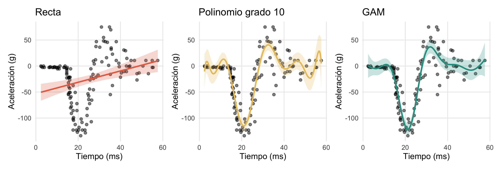
Interpretar el resultado
En summary(m_gam), la tabla de términos suaves muestra el edf de s(times) y una prueba de si el efecto es distinto de una función constante. Un edf muy por encima de 1 confirma que la relación es fuertemente no lineal. El R^2 ajustado y la desviación explicada resumen el ajuste.
plot(m_gam, shade = TRUE, shade.col = "#a8dadc", residuals = TRUE, pch = 16, cex = 0.5,
xlab = "Tiempo (ms)", ylab = "f(times)")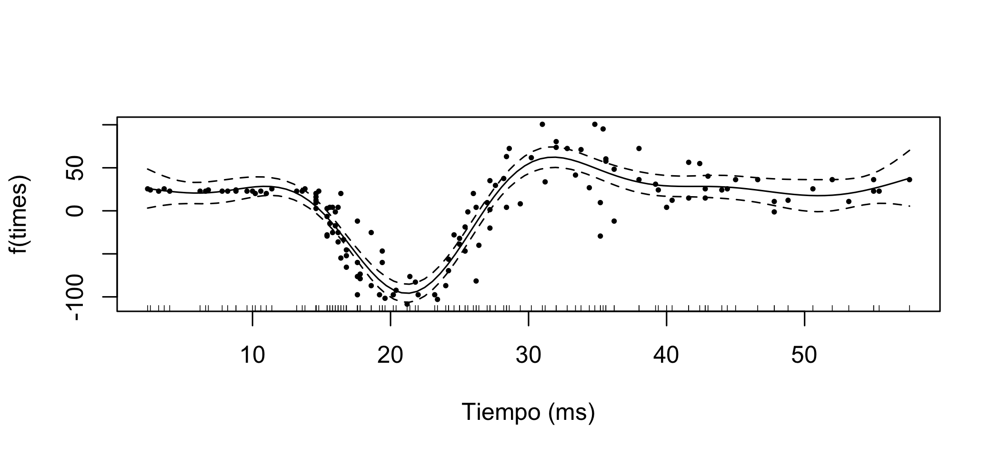
Diagnóstico
gam.check() verifica la suficiencia de la base (k): si el valor k-index es bajo (< 1) con un valor p pequeño, hace falta aumentar k (el máximo de flexibilidad permitido). También muestra los residuos:
gam.check(m_gam)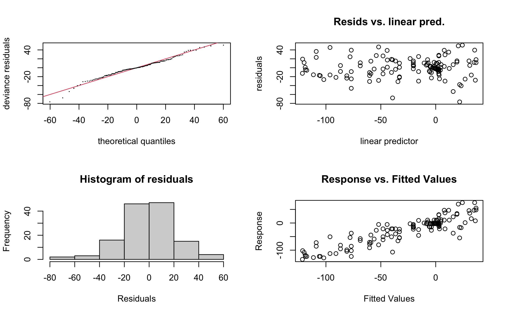
Method: REML Optimizer: outer newton
full convergence after 7 iterations.
Gradient range [-1.436342e-06,1.179834e-06]
(score 616.142 & scale 506.3529).
Hessian positive definite, eigenvalue range [3.329028,65.73378].
Model rank = 10 / 10
Basis dimension (k) checking results. Low p-value (k-index<1) may
indicate that k is too low, especially if edf is close to k'.
k' edf k-index p-value
s(times) 9.00 8.62 1.15 0.95Aquí el k-index es 1,15 con un valor p alto, así que no hay señal de que k sea insuficiente. Sin embargo, el edf (8,6) está cerca del tope k' (9), por lo que conviene comprobar qué pasa con un k mayor (ejercicio 1).
TipConsejo
k es un tope, no el número de parámetros finales: la penalización reduce los grados de libertad. Valores de k = 10 o 20 son un buen punto de partida. Si edf se acerca a k - 1, sube k.
3. GAM con factores y dos variables
Los GAM aceptan factores, covariables lineales y varios suavizadores. Con los datos de iris modelamos el ancho del pétalo según el largo, separando por especie con suavizadores por nivel (by =):
m_esp0 <- gam(Petal.Width ~ Species + s(Petal.Length), data = iris, method = "REML")
m_esp1 <- gam(Petal.Width ~ Species + s(Petal.Length, by = Species), data = iris, method = "REML")
AIC(m_esp0, m_esp1) df AIC
m_esp0 7.90448 -86.94758
m_esp1 8.54066 -86.58692anova(m_esp0, m_esp1, test = "F")Analysis of Deviance Table
Model 1: Petal.Width ~ Species + s(Petal.Length)
Model 2: Petal.Width ~ Species + s(Petal.Length, by = Species)
Resid. Df Resid. Dev Df Deviance F Pr(>F)
1 142.26 4.4270
2 141.97 4.4001 0.2848 0.026826 3.06 0.09734 .
---
Signif. codes: 0 '***' 0.001 '**' 0.01 '*' 0.05 '.' 0.1 ' ' 1nd <- iris |> group_by(Species) |>
reframe(Petal.Length = seq(min(Petal.Length), max(Petal.Length), length.out = 60))
graf_esp <- function(m, titulo) {
nd |> mutate(fit = predict(m, nd)) |>
ggplot(aes(Petal.Length, fit, colour = Species)) +
geom_point(data = iris, aes(y = Petal.Width), alpha = 0.35) +
geom_line(linewidth = 1) +
scale_colour_brewer(palette = "Set2", name = NULL) +
labs(title = titulo, x = "Largo del pétalo (cm)", y = "Ancho del pétalo (cm)") +
theme(legend.position = "bottom")
}
graf_esp(m_esp1, "Una curva por especie") | graf_esp(m_esp0, "Curva común + efecto de especie")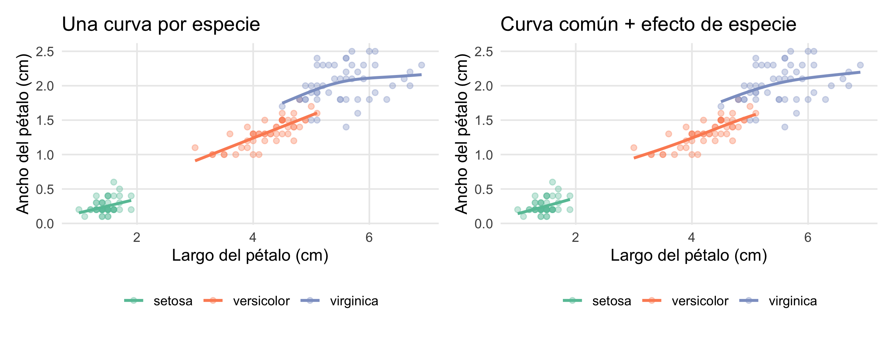
4. Otras familias de respuesta
Como su nombre indica, los GAM son generalizados: admiten respuestas no normales con family =. Por ejemplo, binomial para presencia/ausencia, poisson o nb para conteos y Gamma para valores positivos y asimétricos. Simulamos la probabilidad de encontrar una especie según la profundidad, con un óptimo intermedio (una curva “campana” imposible de modelar bien con una recta logística):
prof <- runif(400, 0, 120)
p_real <- plogis(-1 - ((prof - 50) / 20)^2 + 2)
presente <- rbinom(400, 1, p_real)
sim <- tibble(prof, presente)
m_bin <- gam(presente ~ s(prof), family = binomial, data = sim, method = "REML")
m_log <- glm(presente ~ prof, family = binomial, data = sim)
nd <- tibble(prof = seq(0, 120, length.out = 200))
nd |> mutate(GAM = predict(m_bin, nd, type = "response"),
`Regresión logística` = predict(m_log, nd, type = "response")) |>
pivot_longer(-prof, names_to = "modelo", values_to = "p") |>
ggplot(aes(prof, p, colour = modelo)) +
geom_line(linewidth = 1) +
scale_colour_manual(values = c("#2a9d8f", "#e76f51"), name = NULL) +
labs(x = "Profundidad (m)", y = "Probabilidad de presencia")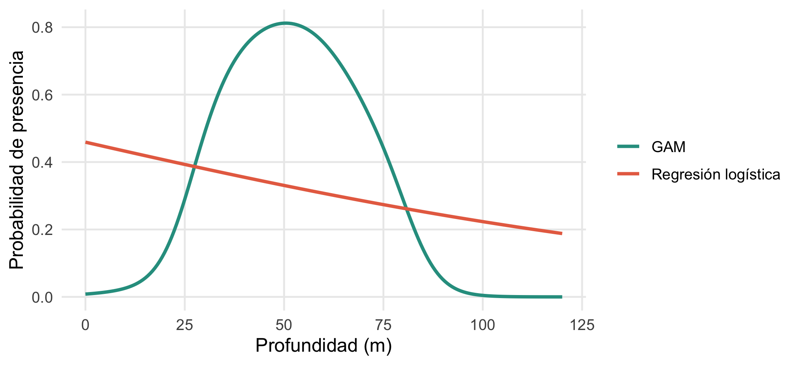
Parte 2. Series de tiempo
5. Teoría: qué tiene de especial una serie de tiempo
Una serie de tiempo es una secuencia de observaciones ordenadas en el tiempo. Su característica principal es que las observaciones cercanas se parecen entre sí: es autocorrelación, y viola el supuesto de independencia de los modelos anteriores. Una serie se suele pensar como la suma de tres componentes:
\[ y_t = T_t + S_t + R_t \]
- Tendencia \(T_t\): movimiento de largo plazo (crecimiento, declive).
- Estacionalidad \(S_t\): patrón que se repite con período fijo (anual, semanal).
- Residuo \(R_t\): lo que queda, que idealmente es ruido sin estructura.
Usamos la serie clásica de pasajeros aéreos internacionales (1949–1960, mensual):
class(AirPassengers)[1] "ts"head(AirPassengers, 14) Jan Feb Mar Apr May Jun Jul Aug Sep Oct Nov Dec
1949 112 118 132 129 121 135 148 148 136 119 104 118
1950 115 126 frequency(AirPassengers) # 12 observaciones por año[1] 12autoplot(AirPassengers) +
labs(x = NULL, y = "Pasajeros (miles)")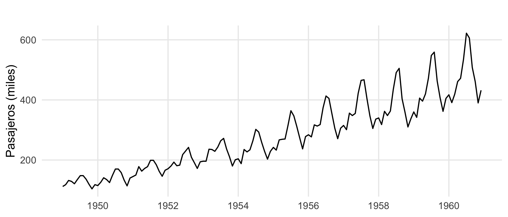
Como la variación estacional crece con el nivel, se aplica el logaritmo, que convierte un patrón multiplicativo en aditivo y estabiliza la varianza:
lap <- log(AirPassengers)Descomposición
stl() separa tendencia, estacionalidad y residuo usando suavizado local (LOESS):
autoplot(stl(lap, s.window = "periodic")) +
labs(x = NULL)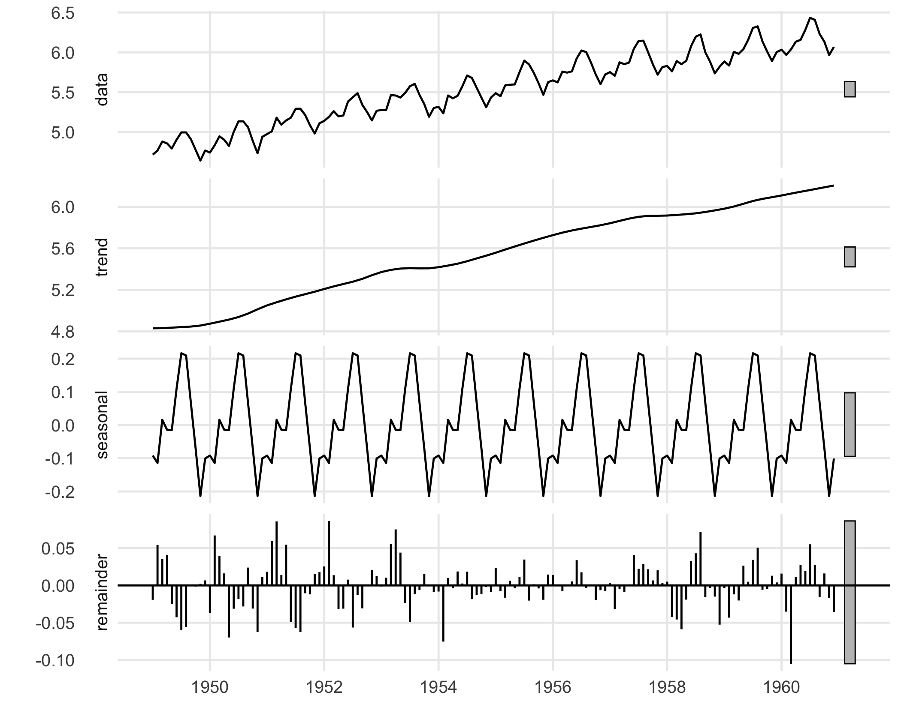
6. Autocorrelación y estacionariedad
La función de autocorrelación (ACF) mide la correlación de la serie consigo misma desplazada \(k\) períodos (rezago \(k\)). La PACF mide la correlación en el rezago \(k\) después de descontar los rezagos intermedios.
ggAcf(lap) + labs(title = "ACF") | ggPacf(lap) + labs(title = "PACF")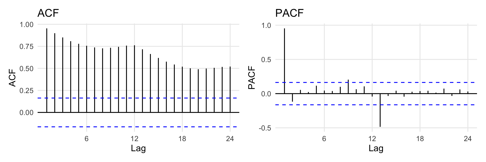
La mayoría de los modelos ARIMA exigen una serie estacionaria (media y varianza constantes en el tiempo). Una tendencia o una estacionalidad la violan. Se corrige diferenciando: restar cada valor de su anterior (\(\Delta y_t = y_t - y_{t-1}\)) elimina la tendencia, y restar el valor del mismo mes del año anterior (\(y_t - y_{t-12}\)) elimina la estacionalidad.
Para decidir cuántas diferencias hacen falta se usan pruebas de raíz unitaria. La prueba KPSS tiene como hipótesis nula que la serie es estacionaria (un valor p pequeño indica lo contrario), y las funciones ndiffs() y nsdiffs() de forecast sugieren el número de diferencias regulares y estacionales:
kpss.test(lap)$p.value # serie original: se rechaza estacionariedad[1] 0.01kpss.test(diff(diff(lap, lag = 12)))$p.value # tras ambas diferencias: no se rechaza[1] 0.1c(regulares = ndiffs(lap), estacionales = nsdiffs(lap)) regulares estacionales
1 1
WarningCuidado con la prueba de Dickey-Fuller aumentada
La prueba ADF (tseries::adf.test()) tiene como hipótesis nula que hay una raíz unitaria, pero su regresión incluye una tendencia lineal, así que con una serie que tiene tendencia determinística y estacionalidad puede rechazar la hipótesis nula (p = 0.01 con adf.test(lap)) aunque la serie claramente no sea estacionaria, como muestran la ACF, el gráfico y KPSS. Ninguna prueba sustituye mirar los datos: úsalas en conjunto.
p1 <- autoplot(lap) + labs(x = NULL, y = "log(pasajeros)")
p2 <- autoplot(diff(diff(lap, lag = 12))) + labs(x = NULL, y = "Diferenciada")
p1 / p2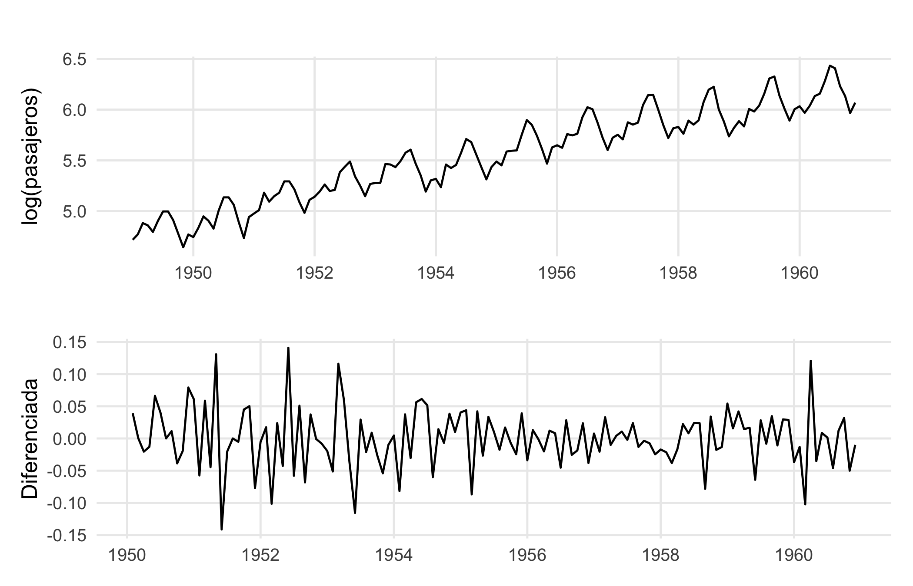
7. Modelos ARIMA
Un modelo ARIMA(p, d, q) combina tres ideas:
- AR(p): la serie depende de sus \(p\) valores anteriores.
- I(d): se diferencia \(d\) veces para hacerla estacionaria.
- MA(q): la serie depende de los \(q\) errores anteriores.
Con estacionalidad se agrega una parte estacional \((P, D, Q)_m\), con \(m\) el período (12 para datos mensuales). auto.arima() elige los órdenes por AIC:
m_arima <- auto.arima(lap)
summary(m_arima)Series: lap
ARIMA(0,1,1)(0,1,1)[12]
Coefficients:
ma1 sma1
-0.4018 -0.5569
s.e. 0.0896 0.0731
sigma^2 = 0.001371: log likelihood = 244.7
AIC=-483.4 AICc=-483.21 BIC=-474.77
Training set error measures:
ME RMSE MAE MPE MAPE MASE
Training set 0.0005730623 0.03504883 0.02626034 0.01098898 0.4752815 0.2169522
ACF1
Training set 0.0144393Diagnóstico de los residuos
Un buen modelo deja residuos sin autocorrelación (ruido blanco). La prueba de Ljung-Box tiene como hipótesis nula que no hay autocorrelación: buscamos un valor p grande.
checkresiduals(m_arima)
Ljung-Box test
data: Residuals from ARIMA(0,1,1)(0,1,1)[12]
Q* = 26.446, df = 22, p-value = 0.233
Model df: 2. Total lags used: 24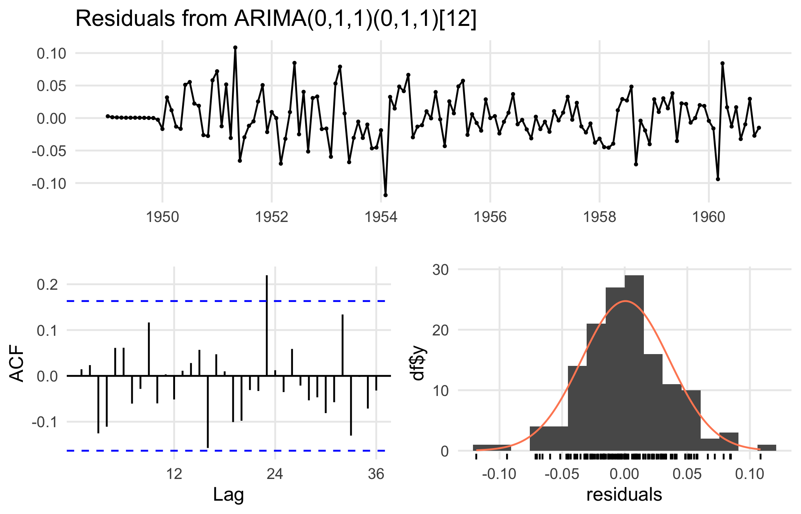
Pronóstico
Para pronosticar en la escala original (pasajeros y no su logaritmo) se le pasa a auto.arima() la transformación lambda = 0 (logaritmo) y la función devuelve los pronósticos ya destransformados:
m_orig <- auto.arima(AirPassengers, lambda = 0) # mismo modelo, con transformación logarítmica incluida
pron <- forecast(m_orig, h = 24)
autoplot(pron) +
labs(title = NULL, x = NULL, y = "Pasajeros (miles)")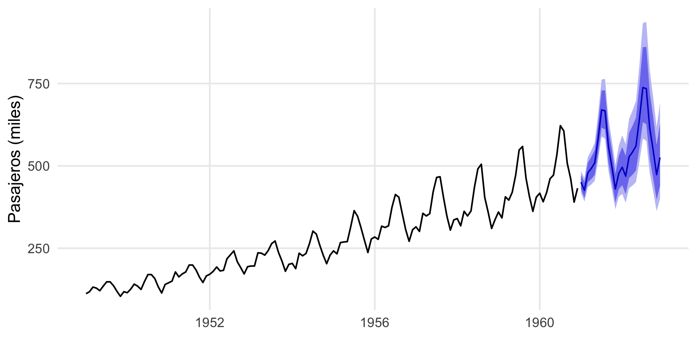
Validar el pronóstico
La mejor forma de evaluar un modelo predictivo es reservar el final de la serie, ajustar con lo demás y comparar con lo que realmente ocurrió:
entrena <- window(AirPassengers, end = c(1958, 12))
prueba <- window(AirPassengers, start = c(1959, 1))
m_val <- auto.arima(entrena, lambda = 0)
accuracy(forecast(m_val, h = length(prueba)), prueba)[, c("RMSE", "MAE", "MAPE")] RMSE MAE MAPE
Training set 8.835339 6.51704 2.637955
Test set 43.183666 39.44726 8.516316El error de la fila Test set (datos que el modelo no vio) es el que importa. Es normal que sea mayor que el de entrenamiento: aquí el MAPE pasa de 2,6 % a 8,5 %. Una diferencia mucho mayor indicaría sobreajuste. Un error de 8,5 % a 24 meses vista es razonable para una serie con crecimiento tan marcado.
8. Relación entre GAM y series: tendencia suave
Los GAM también sirven para modelar la tendencia y la estacionalidad de una serie como funciones suaves del tiempo y de la posición dentro del año, con una base cíclica (bs = "cc") para que diciembre conecte con enero:
df <- tibble(t = as.numeric(time(lap)), mes = as.numeric(cycle(lap)), y = as.numeric(lap))
m_gts <- gam(y ~ s(t, k = 10) + s(mes, bs = "cc", k = 12), data = df, method = "REML",
knots = list(mes = c(0.5, 12.5)))
df |> mutate(ajuste = fitted(m_gts)) |>
ggplot(aes(t)) +
geom_line(aes(y = y), colour = "grey55") +
geom_line(aes(y = ajuste), colour = "#e76f51", linewidth = 0.9) +
labs(x = NULL, y = "log(pasajeros)")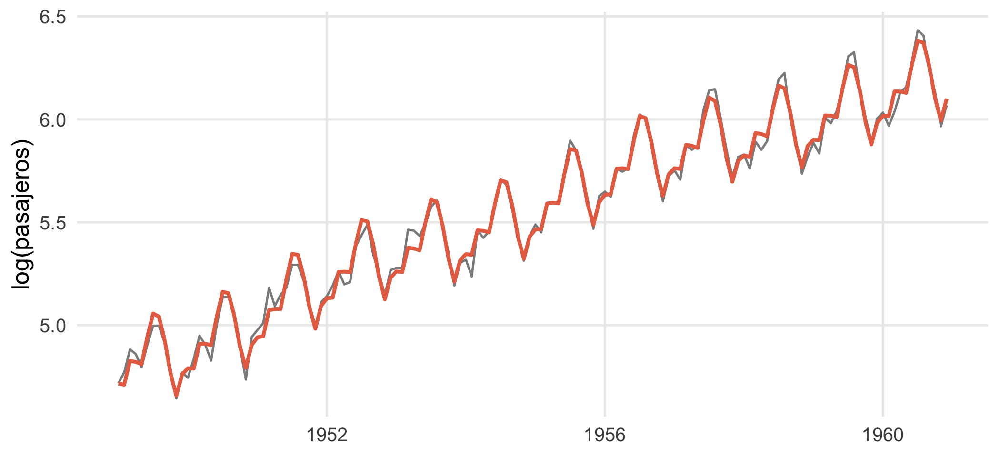
summary(m_gts)$r.sq[1] 0.9917216Este enfoque es flexible para series con datos faltantes o fechas irregulares, y permite agregar covariables (temperatura, precipitación) fácilmente, pero no modela la autocorrelación residual: revisa siempre el ACF de los residuos.
Ejercicios
- GAM. Ajusta un GAM de
accel ~ s(times, k = 5)y otro conk = 30. Compara susedfy sus AIC con el modelo por defecto. ¿Qué pasa con la curva? - GAM con conteos. Simula 300 conteos Poisson con media \(\exp(1 + \sin(x))\) para \(x \in [0, 2\pi]\) y ajusta un GAM con
family = poisson. Grafica la curva ajustada sobre la real. - Descomposición. Descompón
co2(concentración de CO₂ en Mauna Loa, disponible en R) constl(). ¿Cuánto crece la tendencia por año? - ARIMA. Ajusta un ARIMA a
lh(hormona luteinizante) conauto.arima()y revisa los residuos con Ljung-Box. - Pronóstico. Reserva los últimos 24 datos de
co2, ajusta con el resto y calcula el MAPE de los pronósticos.
NoteSoluciones sugeridas
# 1
g5 <- gam(accel ~ s(times, k = 5), data = mcycle, method = "REML")
g30 <- gam(accel ~ s(times, k = 30), data = mcycle, method = "REML")
tibble(k = c(5, 10, 30),
edf = c(sum(g5$edf) - 1, sum(m_gam$edf) - 1, sum(g30$edf) - 1)) |> mutate(AIC = c(AIC(g5), AIC(m_gam), AIC(g30)))# A tibble: 3 × 3
k edf AIC
<dbl> <dbl> <dbl>
1 5 3.79 1349.
2 10 8.62 1217.
3 30 12.7 1222.# Con k = 5 la curva es demasiado rígida (edf ≈ 3,8 y AIC ≈ 1349, mucho peor).
# Con k = 30 el edf sube a ≈ 12,7 pero el AIC no mejora (≈ 1222 frente a ≈ 1217): la penalización
# impide que la curva se ajuste al ruido, y k solo fija el tope de flexibilidad.
# 2
x <- seq(0, 2 * pi, length.out = 300)
y <- rpois(300, exp(1 + sin(x)))
gp <- gam(y ~ s(x), family = poisson, method = "REML")
tibble(x, y, ajuste = fitted(gp), real = exp(1 + sin(x))) |>
ggplot(aes(x)) + geom_point(aes(y = y), alpha = 0.3) +
geom_line(aes(y = real), colour = "black") + geom_line(aes(y = ajuste), colour = "#e76f51")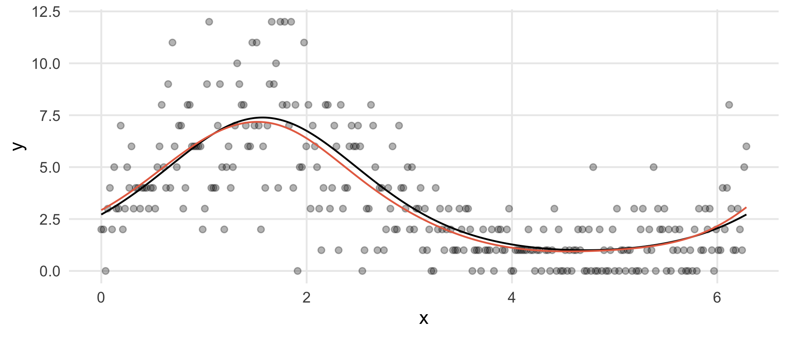
# 3
co2_stl <- stl(co2, s.window = "periodic")
tend <- co2_stl$time.series[, "trend"]
(tend[length(tend) - 6] - tend[7]) / (length(tend) / 12 - 1) # ppm por año, aproximado[1] 1.26104# 4
ar_lh <- auto.arima(lh); ar_lhSeries: lh
ARIMA(1,0,0) with non-zero mean
Coefficients:
ar1 mean
0.5739 2.4133
s.e. 0.1161 0.1466
sigma^2 = 0.2061: log likelihood = -29.38
AIC=64.76 AICc=65.3 BIC=70.37Box.test(residuals(ar_lh), lag = 10, type = "Ljung-Box")
Box-Ljung test
data: residuals(ar_lh)
X-squared = 9.3564, df = 10, p-value = 0.4986# 5
ent <- head(co2, -24) |> ts(start = start(co2), frequency = 12)
tst <- tail(co2, 24) |> ts(end = end(co2), frequency = 12)
accuracy(forecast(auto.arima(ent), h = 24), tst)["Test set", "MAPE"][1] 0.07581259Para profundizar
- Wood, S. N. (2017). Generalized Additive Models: An Introduction with R (2.ª ed.). CRC Press.
- Pedersen, E. J., Miller, D. L., Simpson, G. L. y Ross, N. (2019). Hierarchical generalized additive models in ecology: an introduction with mgcv. PeerJ, 7, e6876. https://doi.org/10.7717/peerj.6876
- Hyndman, R. J. y Athanasopoulos, G. (2021). Forecasting: Principles and Practice (3.ª ed.). otexts.com/fpp3.
- Box, G. E. P., Jenkins, G. M., Reinsel, G. C. y Ljung, G. M. (2015). Time Series Analysis: Forecasting and Control (5.ª ed.). Wiley.
- Simpson, G. L. (2018). Modelling palaeoecological time series using generalised additive models. Frontiers in Ecology and Evolution, 6, 149.